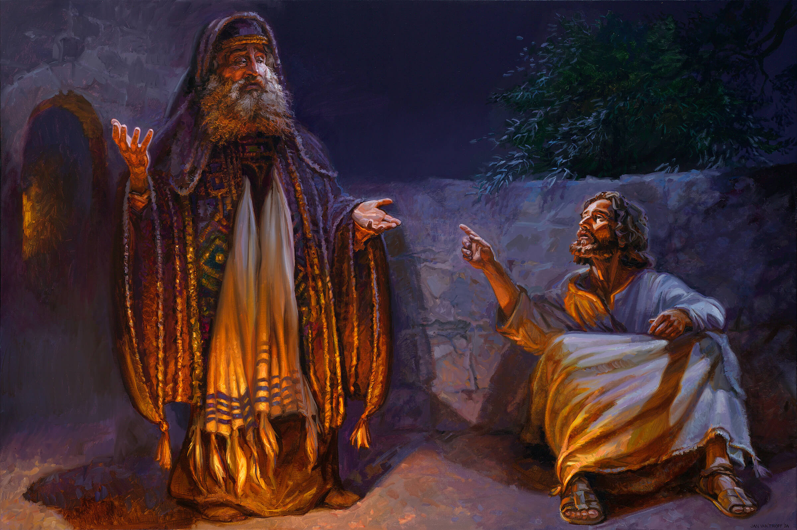

Johannes 1:1–5
Geverifieerd
Lees hoofdstuk 1
Schilderijen van Jan van ’t Hoff. Kies een beeld en lees het bijbehorende hoofdstuk.
© Jan van ’t Hoff · Gospelimages en uitleg
© Jan van ’t Hoff · Gospelimages en uitleg

© Jan van ’t Hoff · Gospelimages en uitleg
De schilderijen vallen onder de gebruiksvoorwaarden van Gospelimages: naamsvermelding, niet commercieel en geen afgeleide werken.